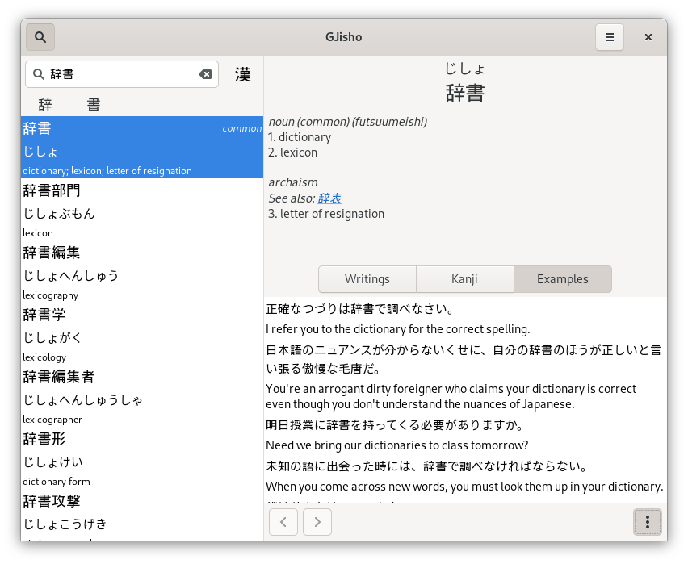

This post is the first in a pair of articles covering my experience using Go to develop a GNOME application. There is a second article covering how I integrated my application with GNOME search.
Project idea and motivation
One of my recent projects is GJisho, a Japanese-English dictionary application for GNOME. I like GNOME, and I wanted to create a simple Japanese-English dictionary that integrated with the rest of the system.
Fortunately, the most difficult part of creating the dictionary application had already been done for me: the Electronic Dictionary Research and Development Group (EDRDG) has very generously compiled and maintained several freely available files that provide the underlying data for a Japanese-English dictionary (such as JMdict, the core dictionary file, and KANJIDIC, the Kanji reading and meaning dictionary file). Combined with the Tatoeba project (also known as the Tanaka Corpus) for example sentences and the KanjiVG project for kanji stroke order data, these files provided all the data necessary to create a full-featured dictionary application with features similar to others available already (most of which probably use the same underlying data).
With that out of the way, and with the GUI toolkit (GTK) chosen by my target platform (GNOME), the last major question before starting development was which language to use for the project.
Why Go?
GTK has bindings for many languages. While evaluating the options, I was able to rule most of them out immediately:
- C: certainly the most supported language for GTK, given that GTK itself is written in C. However, it seemed too low-level for the average GUI application, and other languages such as Rust would be safer and easier to deal with.
- C++: has good performance and is well supported, but I've never really liked C++ as it seemed overly complex to me and, in my previous experience with it, I haven't really enjoyed using it.
- D, Perl, Vala: I don't know much about any of these languages and didn't particularly want to learn a completely new language for this project. Vala seems potentially interesting, though.
- JavaScript, Python: well supported and quite popular, but I don't particularly like writing anything but small projects in languages without static type-checking. If there were a way to use TypeScript with GTK, that would be a possibility (but I haven't found any such support yet).
That left two main candidates: Go and Rust. I'd used both languages before and enjoyed them, so I decided to investigate each more deeply with a focus on how to implement this particular project.
I initially gravitated towards Rust, seeing that it seemed to have more community support, but while attempting to develop an initial prototype, I found that Go had much better support for one of the core requirements of the application, parsing the JMdict and KANJIDIC XML files.
Both JMdict and KANJIDIC are provided as XML files (encoded in UTF-8, fortunately), each with a large number of "entry" elements under the root element (one for each word or kanji, respectively). Here's a snippet of JMdict, showing the first entry in the file (omitting the DOCTYPE and comments):
<JMdict>
<entry>
<ent_seq>1000000</ent_seq>
<r_ele>
<reb>ヽ</reb>
</r_ele>
<sense>
<pos>&unc;</pos>
<xref>一の字点</xref>
<gloss g_type="expl">repetition mark in katakana</gloss>
</sense>
<sense>
<gloss xml:lang="dut">hitotsuten 一つ点: teken dat herhaling van het voorafgaande katakana-schriftteken aangeeft</gloss>
</sense>
</entry>
<!-- 188467 more entries follow... -->
</JMdict>I wanted to avoid having to write a lot of manual code to parse the structure of
each entry. Fortunately, Rust has
serde_xml_rs, which provides a way of
mapping XML to Rust types using the popular
serde framework. Unfortunately, there did
not seem to be a natural way of using it in a streaming manner to avoid reading
the entire (>100MB) file into memory and then parsing it (which itself would
lead to even higher memory overhead for all the entry objects that would be
allocated).
On the other hand, Go's xml package
makes this very easy to do by providing a
DecodeElement method
that accepts the starting tag of an element as a parameter: this way, we can use
the Decoder to read tokens until we hit the first entry, call
DecodeElement to decode a single Entry object and then proceed by reading
until the next entry and calling DecodeElement again. The whole process ends
up looking like this:
decoder := xml.NewDecoder(bufio.NewReader(jmdict))
decoder.Entity = entities
tok, err := decoder.Token()
for err == nil {
if start, ok := tok.(xml.StartElement); ok && start.Name.Local == "entry" {
var entry Entry
if err := decoder.DecodeElement(&entry, start); err != nil {
return fmt.Errorf("could not unmarshal entry XML: %v", err)
}
// Insert entry into a SQLite database so that lookups are fast
}
tok, err = decoder.Token()
}
if err != io.EOF {
return fmt.Errorf("could not read from JMdict file: %v", err)
}There are several other parts of the project where Rust may have been preferable (particularly in C interoperability, which came up when creating a custom GNOME search provider), but this benefit alone was enough to make me choose Go for the project.
Using GTK with Go
The gotk3 library provides GTK bindings for
Go. The library provides support for most basic GTK functionality (including
most of the things I needed for my application) and is pretty easy to use.
Setting up a basic application is straightforward:
func main() {
app, err := gtk.ApplicationNew("com.example.MyApp", glib.APPLICATION_FLAGS_NONE)
if err != nil {
log.Fatalf("Could not create application: %v", err)
}
// Standard GTK application signals for application startup.
// See https://wiki.gnome.org/HowDoI/GtkApplication
_, err = app.Connect("startup", onStartup, app)
if err != nil {
log.Fatalf("Could not connect startup signal: %v", err)
}
_, err = app.Connect("activate", onActivate, app)
if err != nil {
log.Fatalf("Could not connect activate signal: %v", err)
}
os.Exit(app.Run(os.Args))
}
func onStartup(app *gtk.Application) {
// Set up application resources, such as databases, here, but don't show
// any windows yet. This function may be called when the application is
// being launched through DBus activation (explained later in this article),
// such as when getting results for a GNOME search, where it may not be
// appropriate to show application windows.
}
func onActivate(app *gtk.Application) {
// Set up and show application GUI here.
}In the onActivate function, you could use functions such as
gtk.ApplicationWindowNew to create an application window and populate it
programmatically with UI elements. This, however, is rather tedious, especially
for larger applications. An easier way is to create the UI using
Glade, an interactive GUI designer tool for GTK,
which saves the UI as an XML file that can be loaded in an application using
GtkBuilder. In Go,
the process looks like this:
builderData, err := Asset("data/gjisho.glade")
if err != nil {
log.Fatalf("Could not load GUI builder data: %v", err)
}
builder, err := gtk.BuilderNew()
if err != nil {
log.Fatalf("Could not create application builder: %v", err)
}
if err := builder.AddFromString(string(builderData)); err != nil {
log.Fatalf("Could not load data for application builder: %v", err)
}In the above, I've used go-bindata
to bundle the gjisho.glade file into the application binary so I can load it
using Asset. With the builder initialized, you could get UI elements by ID
using builder.GetObject, handling the error, and then asserting each element
to its expected type (e.g. *gtk.Label). Since this would get very tedious with
many UI elements, I wrote a simple function to do it reflectively:
var appWindow *gtk.ApplicationWindow
var aboutDialog *gtk.AboutDialog
// Other UI elements are also present
var appComponents = map[string]interface{}{
"aboutDialog": &aboutDialog,
"appWindow": &appWindow,
// etc.
}
func getAppComponents(builder *gtk.Builder) {
for name, ptr := range appComponents {
comp, err := builder.GetObject(name)
if err != nil {
log.Fatalf("Could not get application component %v: %v", name, err)
}
reflect.ValueOf(ptr).Elem().Set(reflect.ValueOf(comp))
}
}Then, to initialize all the appComponents to their proper values, I just use
getAppComponents(builder). This is similar to the
Builder.GetSignals method
provided by gotk3 to connect signals defined in the UI file to Go functions
defined as values of a map[string]interface{}.
For the rest of the application, most of the Go bindings translate quite naturally from the underlying C API, so the main GTK documentation remains an invaluable source of information even for Go programmers.
Here is a screenshot of what the application looks like in action:

Next steps
This post covered only the basics of my experience developing GJisho, such as my motivation for using Go and how I initially set up the application. The most interesting (and challenging) part of the project was enabling it to be used as a GNOME search provider, which I plan to cover in more detail in a future post.